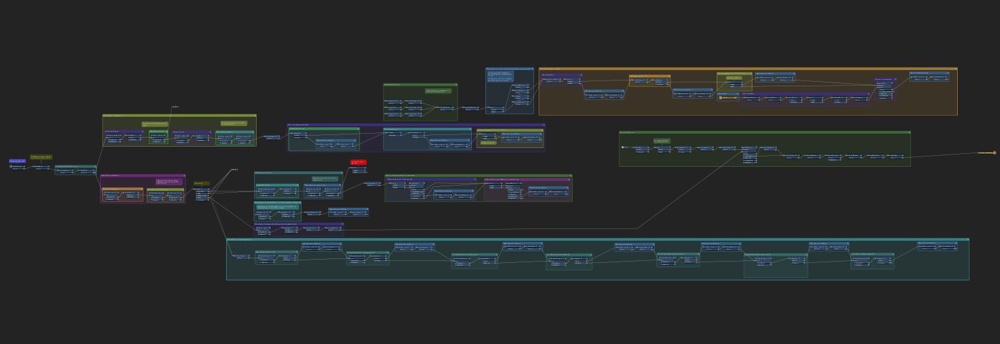
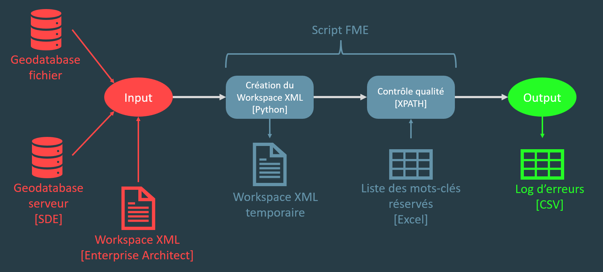

Contrôle qualité structurelle
#FME
#XPath
#Python
#ArcGIS Pro
#Dashboard


Contexte
La DCG étant le point central des géodonnées du canton, chaque service lui soumet ses données géographiques en vue de leur diffusion sur Viageo. De nouvelles règles de structuration ont été mises en place en interne afin d'améliorer la qualité des données.
Objectifs
- Effectuer un contrôle de tout nouveau jeu de données sur la base des règles de qualité structurelles internes
- Analyser l'ensemble des données existantes et diffuser les résultats via des dashboards de suivi par service, afin de faciliter la communication, prioriser les erreurs et suivre l'avancement
Rôle
La partie technique du projet a été menée de manière autonome. Je me suis chargé d'établir les scripts permettant :
- d'analyser la structure XML et le contenu de n jeux de données, et de fournir un rapport complet et détaillé de toutes les erreurs présentes
- d'analyser les données existantes et de diffuser les résultats via un dashboard